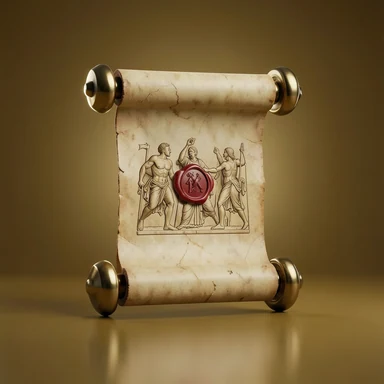

В ЦЕНТРЕ ВНИМАНИЯ
ИСТОРИЯ В ФОКУСЕ
Событие дня
Открываем интересные истории из календаря.
Основной сервер временно недоступен после кибератаки на нашего хостинг-провайдера Beget. Мы восстановили доступные материалы и продолжаем работу. Некоторые изображения и функции пока отсутствуют — спасибо за понимание.
Праздники, открытия, необычные традиции, имена и исторические события. Откройте то, что делает эту дату особенной.

Открываем интересные истории из календаря.
Самый интересный справочник рядом
Поводы и традиции со всего света
Найдено в дополнительных источниках. Эти даты ещё проходят проверку.
Выберите день — и откройте его историю, праздники и памятные даты.
Загружаем...
Праздники и памятные даты разных стран — возможность узнать традиции других культур.
Ищите праздники, исторические события, города и субъекты России.
История, символика и интересные факты. От любимого родного города до места, где ещё предстоит побывать.
Республики, края, области и другие регионы: собираем историю и географию страны по частям.